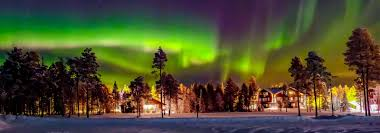

Since this land is full of history, adventure, fantastic tastes, and views; it is difficult to choose among them for a specific time at Cappadocia. Nonetheless, if you are ready for a memorable long weekend or a honeymoon, let us help you to decide. In most places, it is advised to start a day with a full breakfast. But if you are in Cappadocia, a place that offers you one of the most fantastic views of the world, we suggest you wake up at dawn and see or board one of the hot-air balloons, to view Cappadocia’s magical landscape and its famous fairy chimneys in the light of the rising sun. While the sun is rising, you will be mesmerized by the play of the sun rays around the magical surroundings. After this visual show, you can enjoy a delicious Turkish breakfast for a fuel. Then you will be ready to truly discover Cappadocia! Uçhisar Castle is the highest point for a panoramic view of Cappadocia, and it is one of the best points for a beginning. This giant natural castle offers you an overview of Göreme, Avanos, Çavuşin, Ortahisar and Pigeon Valley which are among the most popular places to visit. The next destination is Göreme Open-Air Museum. The Museum has been on the UNESCO World Heritage List since 1985 and it is famous for carved churches dating back to the early periods of Christianity. You can see so many remnants of the monasteries, frescoes from the Bible and be amazed by the fact that some of these are more than 1.600 years old. Do not forget to visit Karanlık and Tokalı Churches! These are the most famous and well-protected churches of Göreme Open-Air Museum. You can have your lunch at Avanos with many local options. The tasty clay pot kebab, beans, soups, pumpkin desert, halva, and local wines… We do not have enough space to list all the mouth-watering options here. After the lunch, you can visit a pottery atelier and choose a souvenir for yourself or your loved ones. You can even try to make your own pottery here!
Lapland offers a magical two-day itinerary for adventure seekers and nature lovers. On Day 1, start with a visit to the Santa Claus Village in Rovaniemi, where you can meet Santa, cross the Arctic Circle, and shop for unique souvenirs. After lunch, explore the Arctic wilderness with a thrilling husky sled ride or snowmobile safari through snowy forests and frozen lakes. In the evening, enjoy a traditional Finnish dinner and hunt for the Northern Lights. On Day 2, immerse yourself in the natural beauty with a visit to the Ranua Wildlife Park, home to Arctic animals like polar bears and reindeer. Afterward, relax in a cozy glass igloo or snow hotel, offering stunning views of the winter landscape. Wrap up the day with a rejuvenating sauna experience followed by a warm dinner at a local restaurant, savoring Lapland’s delicious local cuisine.
Leh, the capital of Ladakh, offers an unforgettable experience with its stunning landscapes and rich culture. On day one, start by visiting the Leh Palace, a 17th-century architectural marvel offering panoramic views of the city. Explore the Tibetan-style architecture at the Shanti Stupa, and don’t miss the beautiful Leh market for local handicrafts and souvenirs. In the afternoon, take a drive to the stunning Pangong Lake, located around 4 hours away, and enjoy a breathtaking sunset by the shore. On day two, visit the ancient Hemis Monastery, known for its annual festival and vibrant spiritual atmosphere. Then head to the Thiksey Monastery, a replica of the Potala Palace, offering a serene vibe and spectacular views. End the day with a visit to the mesmerizing Nubra Valley via the Khardung La Pass, one of the highest motorable roads in the world, where you can enjoy the scenic beauty and the unique sand dunes of Hunder.
Paris, the City of Light, offers a captivating two-day itinerary. On Day 1, start your morning with a visit to the iconic Eiffel Tower and enjoy a panoramic view of the city. Then, stroll along the Champs-Élysées to the Arc de Triomphe, before heading to the Louvre Museum to admire masterpieces like the Mona Lisa. In the evening, enjoy a Seine river cruise, passing landmarks lit up beautifully at night. On Day 2, begin with a visit to Notre-Dame Cathedral and walk along the charming streets of Le Marais district. After lunch, explore the stunning Sainte-Chapelle and immerse yourself in the artistic beauty of Montmartre, where you can visit Sacré-Cœur Basilica. Conclude your day by enjoying the lively atmosphere at a café in the Latin Quarter or catching a show at the Moulin Rouge.
| Completed | Place |
|---|---|
| Yes | Cappadocia |
| No | Lapaland |
| No | Leh |
| No | Paris |